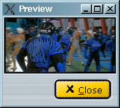
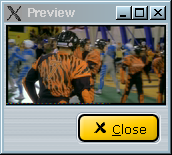

|
Video: barevné a jasové filtry 1.Pøedmluva Filtry v této kategorii mìní jasovou a barevnou slo¾ku. 2.Barevné a jasové filtry Pøehodí slo¾ky chrominance U a V (inverze barev, dìlají to tøeba nìkteré TV karty). Napøíklad tento obrázek má prohozené slo¾ky U a V:  Po aplikaci Swap U & V dostanete správné barvy:  Lineární úprava kontrastu/jasu na jasové (Luma) a barevné (Chroma U/V) slo¾ce. Mù¾e prospìt pøíli¹ svìtlému/tmavému/èervenému/modrému obrazu.
Kontrolní filtry pro zobrazení pouze luminance nebo chrominance. |